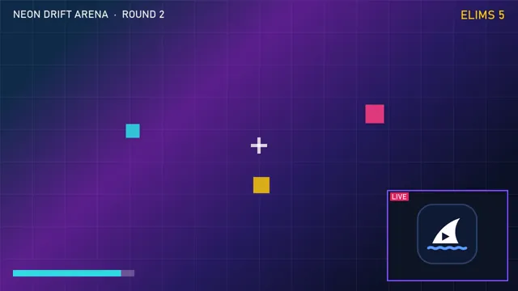
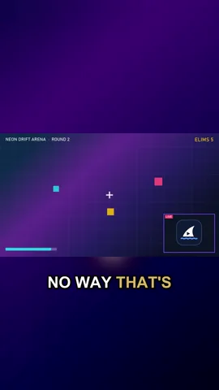

支持 Kick也支持 Twitch、YouTube 和任何视频文件
放进直播，拿到可发布的短片。
SharkyClips 找出直播录像中的精彩时刻，把它们做成适合 YouTube Shorts、TikTok 和 Instagram Reels 的竖屏短片。一切都在你自己的电脑上运行。
- 100% 免费
- 无水印
- 无限制
- 在你的电脑上运行
真实效果
每一组显示长直播中的一个时刻，以及 SharkyClips 自动用它做成的短视频中的同一时刻：已剪辑、转为 9:16、带字幕和标题。
 直播 · 4:39
直播 · 4:39 成品短视频
成品短视频One grenade, triple kill! What did I see? 🤯入选原因：大声反应、聊天爆发（消息多 14 倍）以及 "what the hell"。评分 93。 
直播 · 1:11
成品短视频One versus three? I pulled off a CLUTCH! 😱1 打 3 翻盘：声音很大，聊天快了 12 倍，还有 "no way" 和 "clutch"。评分 78。  直播 · 5:28
直播 · 5:28 成品短视频
成品短视频Did that last throw really just win the game?获胜时刻：短暂安静后是欢呼和 "let's go"。评分 85。  直播 · 0:21
直播 · 0:21 成品短视频
成品短视频Did you really see that double elimination happen?双杀："oh my god"、大声反应，聊天快了 11 倍。评分 82。  直播 · 2:53
直播 · 2:53 成品短视频
成品短视频Zero armor, reckless run, barely alive! 😱被 Boss 追着慌张逃跑。脏话已消音，并在字幕中隐藏。评分 64。  直播 · 3:51
直播 · 3:51 成品短视频
成品短视频Practiced all week, then finally landed it练了一整周的跳跃：聊天里刷 "yes!" 和 "LETS GOOO"。评分 75。
用我们的演示直播制作（手绘游戏画面、电脑合成语音和生成的聊天），没有出现任何真人、真实游戏或频道。没有任何手动剪辑。
使用方法
三个步骤。中间的剪辑工作由 SharkyClips 完成。
添加直播
拖入一个视频文件，或粘贴 Twitch、YouTube 或 Kick 链接。SharkyClips 也可以读取 OBS 文件夹里最新的录像。
SharkyClips 制作短片
它找出热闹、搞笑和激动的时刻，干净地剪下来，加上字幕，把脏话消音，并写好标题。
检查并分享
观看短片，修改你想改的地方，然后分享到 YouTube Shorts、TikTok 和 Instagram Reels。


为主播打造
找出精彩时刻
大声的反应、笑声、弹幕爆发和游戏事件，汇成一份排好序的短片列表。
消音，并且复查
支持 11 种语言的脏话消音，每个做好的短片都会再听一遍。
一个分享按钮
YouTube Shorts、TikTok 和 Instagram Reels，每个平台都有合适的文案和限制。
TikTok 助手新
一个适用于 Edge、Chrome、Opera 和 Brave 的小浏览器扩展，会帮你填好 TikTok 上传页面。由你检查并亲自点击发布。
照片幻灯片新
把 2 到 20 张照片做成带标签和音乐的竖屏前后对比视频。
主题和颜色新
应用有四种颜色主题（经典、海洋、Shark Sign、高对比度），深色或浅色，还能设置你自己的强调色。
SharkyClips 对比
信息来自各产品的官方网站，核对日期：2026年11月28日。价格为美元，不含税。方案会变化，做决定前请查看它们的页面。
| 项目 | SharkyClips | Eklipse | OpusClip | StreamLadder |
|---|---|---|---|---|
| 价格 | 免费（开源，MIT 许可证） | 免费试用；Premium 每月 24.99 美元起，或每年 179.99 美元 | 有免费方案；付费方案每月 15 美元起 | 有免费方案；付费方案每月 15 美元或每年 150 美元起 |
| 水印 | 从不 | 免费导出带水印 | 免费方案带水印 | 仅当免费短视频使用付费功能时 |
| 短视频数量限制 | 无 | 免费：预览一场近期直播的短视频；Premium：无限 AI 剪辑 | 免费：每月 60 分钟处理时长，文件保存 3 天 | 无分钟限制；整场直播的 AI 剪辑从 Creator 方案起（每月 27 美元）；免费导出为 720p |
| 视频在哪里处理 | 在你的电脑上：不上传任何内容 | 在线：AI 剪辑在云端运行 | 在线：上传文件或粘贴链接 | 在线：上传文件或粘贴链接 |
| 你需要什么 | 一台 8 GB 内存的 Windows 10 或 11 电脑（macOS：测试较少） | 浏览器和账号 | 浏览器和账号 | 浏览器和账号 |
| 按游戏识别 | 读取《Delta Force》和《英雄联盟》的游戏画面；其他游戏通过语音、声音和聊天识别 | 支持 3000 多款游戏，按游戏类别调校 | 未说明 | 未说明 |
| Kick | Kick 视频及其聊天记录 | 可导入 Kick 直播 | 支持 Kick 链接 | 免费方案可导入 Kick 片段；整场 Kick 直播需 Creator 方案起 |
| 脏话消音 | 11 种语言自动处理，并重新检查每个短视频 | 未说明 | Pro 方案起（每月 29 美元） | 自动屏蔽词语（未明确说明所属方案） |
| 语言 | 11 种（应用、语音识别和字幕） | 字幕语言未说明；语音指令为英语 | 字幕支持 25 种以上 | 字幕支持 90 种以上 |
“未说明”表示我们在其官方页面上没有找到。有错误或过时的信息？请通过联系页面告诉我们，我们会更正。
来源（14 个官方页面）
- eklipse.gg
- eklipse.gg/help/how-much-does-eklipse-premium-cost
- eklipse.gg/help/what-are-the-main-differences-between-the-free-and-premium-plans
- eklipse.gg/help/will-my-exported-video-have-a-watermark
- eklipse.gg/help/import-kick-streams-to-eklipse
- eklipse.gg/features/ai-edit
- opus.pro/pricing
- help.opus.pro/docs/article/plans-and-credits.md
- help.opus.pro/docs/article/video-sources-supported.md
- help.opus.pro/docs/article/video-languages-supported.md
- streamladder.com/pricing
- streamladder.com/clipgpt/import-from-kick
- streamladder.com/clip-editor/word-censoring
- streamladder.com/clip-editor/captions
SharkyClips 如何使用 YouTube
连接 YouTube 是可选的。连接后，SharkyClips 只使用官方 YouTube API 服务来上传和管理你选择的短视频，并向你显示它们的数据。你的 YouTube 数据保存在你的电脑上。
查看权限以及你的 YouTube 数据如何被使用
上传到 YouTube 是可选的。如果你在设置 → YouTube 中连接频道，SharkyClips 会使用官方 YouTube API 服务做以下这些事，而且只在你要求时才做：
| 操作 | 权限（范围） | 何时 |
|---|---|---|
| 上传你设置好的短片（标题、描述、标签、隐私、发布时间、播放列表、缩略图）；修改其信息或发布时间，提前发布，或在公开前取消时删除；显示已连接的频道；读取通过 SharkyClips 上传的视频的观看次数、点赞数和隐私状态 | youtube | 当你点击立即发布或安排一个短片（电脑开着时提前上传）、在资料库中编辑或取消、打开设置时，以及应用运行期间大约每 6 小时一次 |
| 读取这些视频的平均观看百分比，以了解哪种开头（钩子）风格能留住观众 | yt-analytics.readonly | 仅针对作为钩子测试一部分上传、且已公开 48 小时的短片 |
这些数据只保存在你的电脑上，只用于向你展示结果，并为你的频道改进短片评分。SharkyClips 没有服务器：开发者从不接收、查看或分享你的 YouTube 数据，也不会把任何数据用于广告。SharkyClips 从不读取他人的频道、你的评论、订阅者或观看记录。它只会修改或删除通过 SharkyClips 上传的视频，而且只在你要求时（例如编辑或取消已安排的短片时）。
你可以随时在设置 → YouTube 中断开连接（这会在 Google 撤销访问令牌），或在 Google 账号权限中移除访问权限。连接即表示你同意 YouTube 服务条款；Google 依据 Google 隐私权政策处理你的数据。请阅读完整的隐私政策和使用条款。
免费、开源、私密
SharkyClips 采用 MIT 许可：没有订阅，没有点数，没有水印。没有账号也没有追踪，除非你分享，否则视频一直留在你的电脑上。源代码和每个版本都在 GitHub 上。